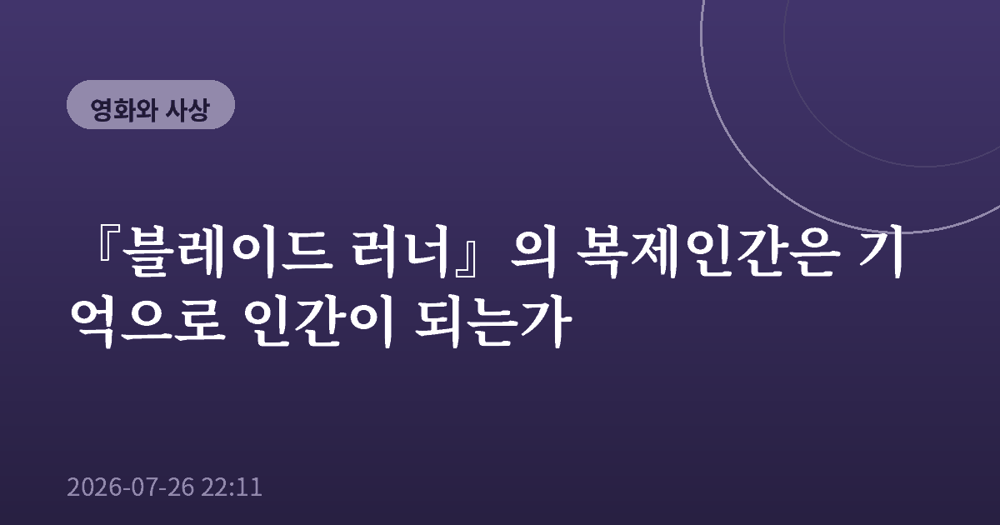
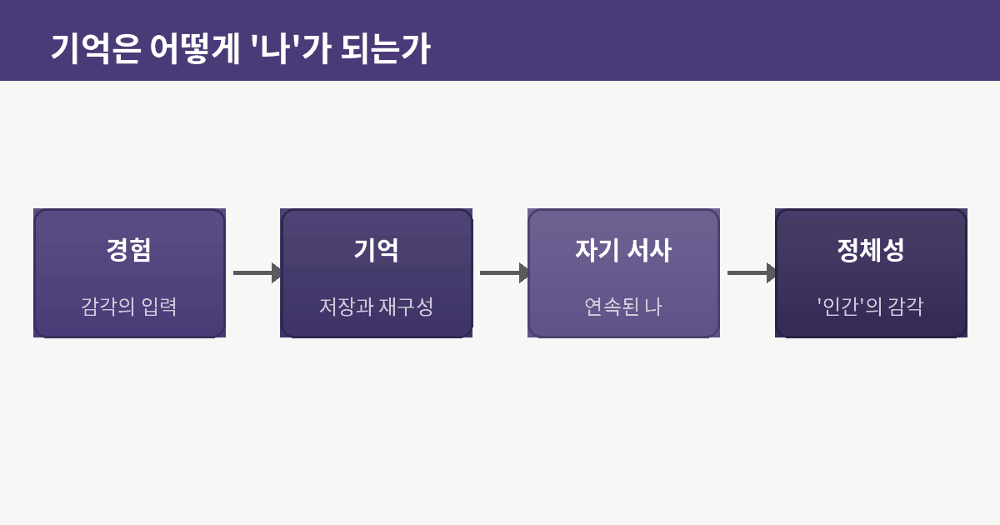
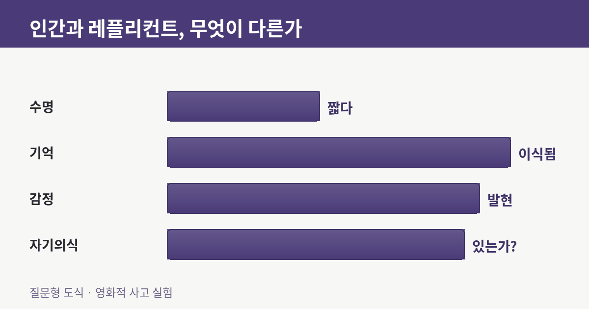
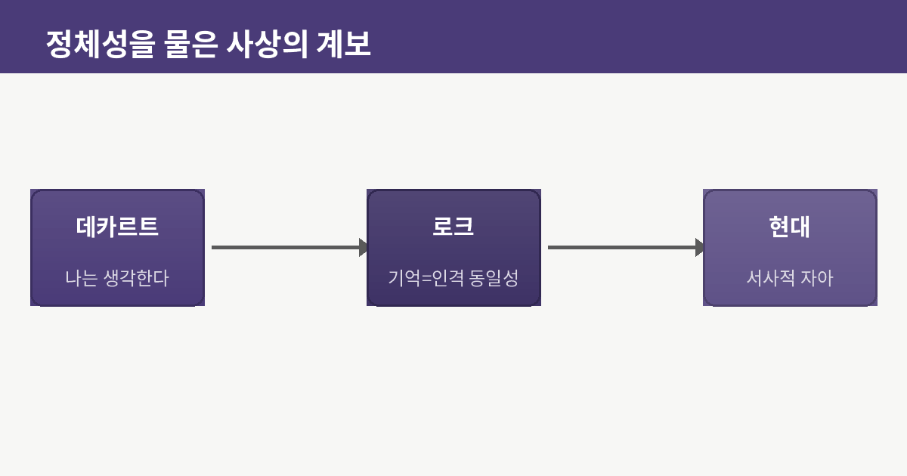
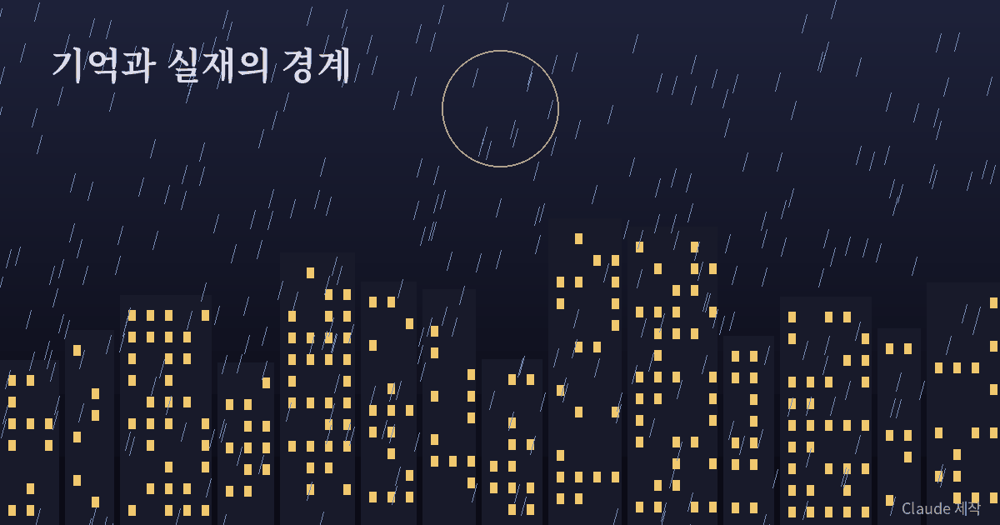

『블레이드 러너』의 복제인간은 기억으로 인간이 되는가

나는 오래전 낡은 노트에서 초등학교 소풍 사진 한 장을 발견한 적이 있다. 분명 내 얼굴인데, 그날의 기억이라며 떠오르는 장면은 실은 그 사진을 반복해 본 데서 만들어진 것이었다. 내가 기억하는 건 그날인가, 아니면 사진인가. 『블레이드 러너』를 다시 볼 때마다 나는 그 노트를 떠올린다. 이 영화가 던지는 질문이 결국 그것이기 때문이다. 이식된 기억을 가진 존재는, 그 기억이 가짜라면 인간이 아닌가.

기억이라는 이식된 뿌리
영화 속 복제인간, 레플리컨트는 인간과 거의 구별되지 않는다. 결정적 차이는 짧은 수명과, 누군가가 심어 넣은 기억을 가졌다는 점이다. 어린 시절의 추억, 어머니의 얼굴 같은 것들이 사실은 설계된 데이터다. 그런데 여기서 이상한 일이 벌어진다. 가짜라는 걸 알면서도 그 기억을 붙들고 눈물을 흘리는 존재를, 우리는 쉽게 '기계'라고 부르지 못한다. 나는 이 지점이 영화의 핵심이라고 생각한다. 기억의 출처가 진짜냐 가짜냐보다, 그 기억을 자기 것으로 끌어안고 괴로워하는 태도 자체가 이미 인간적인 무언가라는 것.
데카르트의 의심과 로크의 대답
여기서 두 사상가를 떠올리게 된다. 근대 철학의 문을 연 한 철학자는, 모든 것을 의심해도 '의심하고 있는 나'만은 부정할 수 없다고 보았다. 감각도 기억도 속을 수 있지만, 지금 생각하고 있다는 사실만은 확실하다는 것이다. 이 논리를 따르면 레플리컨트도 스스로를 의심하고 고뇌하는 한, 하나의 생각하는 주체다. 한편 조금 뒤의 다른 철학자는 인격의 동일성을 '몸'이 아니라 '기억의 연속'에서 찾았다. 어제의 나와 오늘의 나를 같은 사람으로 묶어주는 건 기억의 사슬이라는 것이다. 그의 관점을 밀고 가면 놀라운 결론에 이른다. 기억이 그 존재를 하나의 인격으로 만든다면, 그 기억이 이식된 것인지 자연스럽게 쌓인 것인지는 본질이 아닐 수도 있다.

재현이 실재를 삼킬 때
물론 반론도 있다. 이식된 기억은 진짜 경험이 아니라 경험의 '복제'일 뿐이라는 것이다. 하지만 나는 이 반론이 오히려 우리 자신을 돌아보게 만든다고 느낀다. 우리의 기억은 얼마나 진짜인가. 뇌과학은 기억이 저장된 파일을 그대로 꺼내는 게 아니라, 떠올릴 때마다 다시 쓰이고 조금씩 각색된다고 말한다. 그렇다면 나의 어린 시절도 사진과 가족의 이야기로 끊임없이 재편집된 하나의 '재현'에 가깝다. 실재와 재현의 경계가 이렇게 흐릿하다면, 레플리컨트와 나 사이의 거리는 우리가 믿고 싶은 만큼 멀지 않다.

빗속에서 남는 물음
영화의 유명한 마지막 장면에서, 죽어가는 복제인간은 자신이 본 경이로운 순간들이 곧 사라질 것을 슬퍼한다. 사라짐을 아쉬워하는 마음, 유한함 앞의 그 떨림이야말로 가장 인간적인 정서가 아닐까. 나는 그 장면에서 인간과 비인간을 가르는 선이 '무엇으로 만들어졌는가'가 아니라 '무엇을 소중히 여기고 무엇을 두려워하는가'로 옮겨간다고 느낀다.

그래서 이 오래된 영화는 지금 우리에게 더 묵직하게 다가온다. 인공지능이 사람처럼 말하고, 세상이 진짜와 만들어진 것을 뒤섞는 시대에, 우리는 결국 같은 질문을 마주하게 된다. 나를 나로 만드는 건 무엇인가. 그 답을 기억에서 찾든 태도에서 찾든, 한 가지는 분명하다. 스스로에게 그 질문을 던지는 순간, 우리는 이미 기계가 아니라 사람으로서 거기 서 있다는 것.